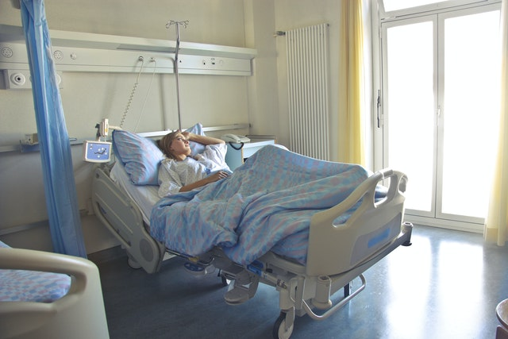

Clínica La Colina
Somos una Institución Privada creada para dar Servicios de Salud de manera eficiente y responsable, comprometida con la población, buscando colaborar con las Políticas de Salud tanto en los procesos de Prevención y tratamiento en todas las especialidades Médicas, funciona y brinda atención interrumpida las 24 horas del día, con servicios de consulta externa, hospitalización, cuidados intensivos neonatal, pediátrico y adultos, apoyo diagnóstico de imagen y laboratorio.
Unidad de Cuidados Intensivos

La unidad de cuidados intensivos es un servicio sumamente especializado ya que los pacientes que allí se atienden padecen enfermedades graves que deben atenderse con capacidad y prontitud, así como con todo lo necesario para atender toda clase de padecimientos.
Hospitalización

Este servicio está orientado a proporcionar cuidados básicos y especializados seguros en ambiente hospitalario confortable, que genere la satisfacción de nuestros usuarios y sus familias, además que propicie su participación en el proceso de atención con respeto de la autonomía y dignidad humana.
Laboratorio

Contamos con laboratorios totalmente equipados, siempre a la vanguardia de la medicina. Cualquier ensayo clínico o investigación médica está incompleta sin pasar por un laboratorio clínico, ya que estos permiten confirmar o descartar un diagnóstico.